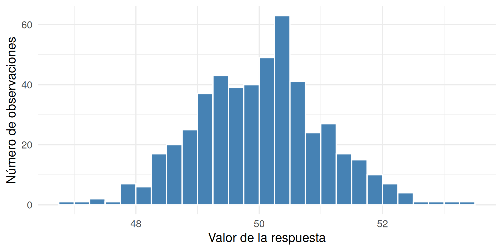
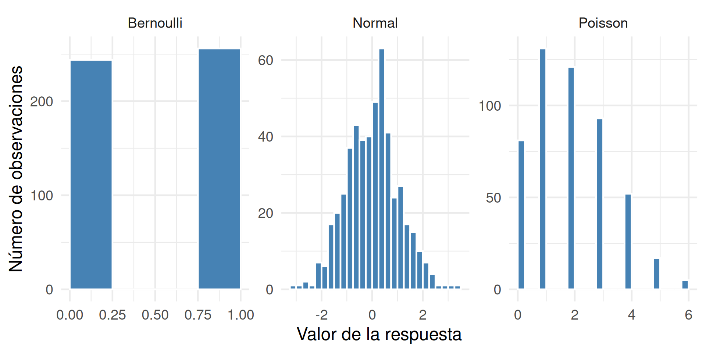
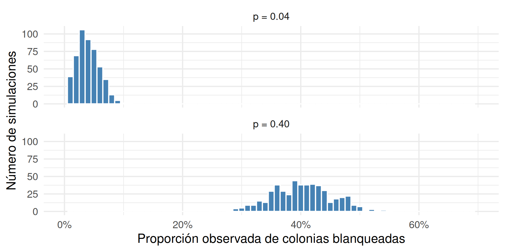
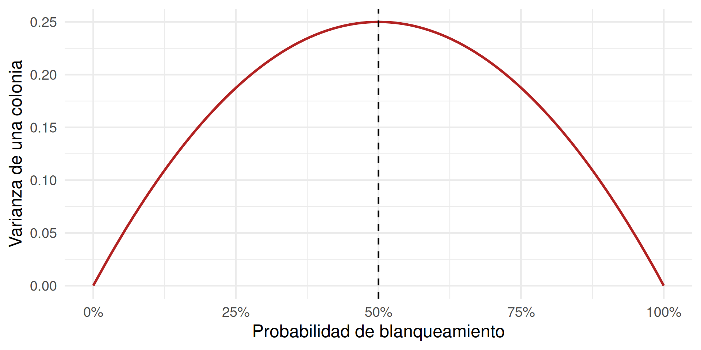
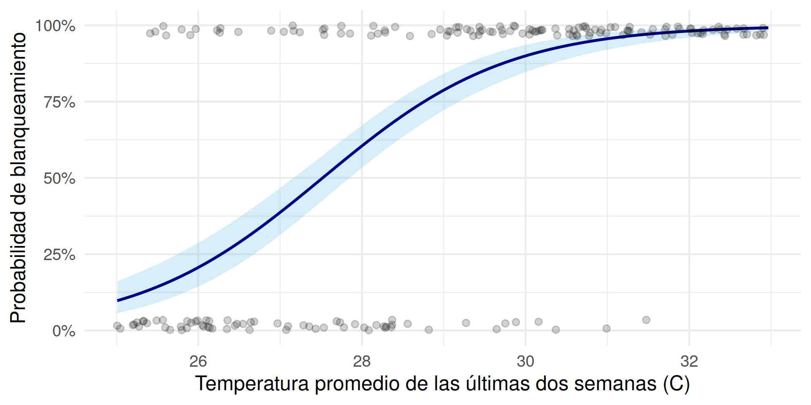

temperatura blanqueado
1 30.58939 1
2 29.45224 1
3 26.12112 1
4 27.28579 0
5 29.44295 1
6 25.20105 0Respuestas binarias
Después de algunas semanas cálidas por el Niño, se evalúan colonias de corales en varios sitios:
blanqueado = 0: sana o recuperadablanqueado = 1: blanqueada o muertaLa unidad de observación es una colonia individual.
Que nos indica esto sobre la distribucion matematica con cual se podria generar este tipo de datos?
Se pueden generar con una distribuucion Normal? O necesitamos otra distribucion?

Un modelo lineal supone una respuesta continua y no es limitada entre 0 y 1:
\[ Y_i \sim \mathrm{Normal}(\mu_i, \sigma^2), \qquad \mu_i = \beta_0 + \beta_1 x_i. \]
Para blanqueado, esto falla porque:

Para cada colonia:
\[ Y_i \sim \mathrm{Bernoulli}(p_i). \]
Un modelo generativo describe un proceso posible para producir los datos:
El modelo no predice que una colonia estará “0.37 blanqueada”; predice la probabilidad de que esté blanqueada.
En cada simulación, muestreamos 100 colonias y calculamos la proporción observada de blanqueamiento.


La respuesta sigue una distribución Bernoulli; la relación con el predictor es lineal en la escala de log-odds:
\[ \operatorname{logit}(p_i) = \log\left(\frac{p_i}{1-p_i}\right) = \beta_0 + \beta_1\,\mathrm{temperatura}_i. \]
temperatura blanqueado
1 30.58939 1
2 29.45224 1
3 26.12112 1
4 27.28579 0
5 29.44295 1
6 25.20105 0temperatura: promedio de las últimas dos semanas.blanqueado: \(0\) o \(1\).modelo_binomial <- glm(
blanqueado ~ temperatura,
family = binomial(link = "logit"),
data = corales
)
summary(modelo_binomial)
Call:
glm(formula = blanqueado ~ temperatura, family = binomial(link = "logit"),
data = corales)
Coefficients:
Estimate Std. Error z value Pr(>|z|)
(Intercept) -24.36770 2.53014 -9.631 <2e-16 ***
temperatura 0.88546 0.09077 9.755 <2e-16 ***
---
Signif. codes: 0 '***' 0.001 '**' 0.01 '*' 0.05 '.' 0.1 ' ' 1
(Dispersion parameter for binomial family taken to be 1)
Null deviance: 462.34 on 359 degrees of freedom
Residual deviance: 285.92 on 358 degrees of freedom
AIC: 289.92
Number of Fisher Scoring iterations: 5Tiene sentido biologico intepretar el intercepto?
¿Qué indica el signo del coeficiente de temperatura?
predict() devuelve log-odds por defecto. plogis() los convierte a probabilidades.
predictor_30 <- predict(
modelo_binomial,
newdata = data.frame(temperatura = 30)
)
plogis(predictor_30) 1
0.8999043 Una diferencia de \(1\,^{\circ}\mathrm{C}\) no produce el mismo cambio en probabilidad a todas las temperaturas.
ggeffects| temperatura | probabilidad | IC.95. |
|---|---|---|
| 26 | 20.7% | 14.4% a 28.7% |
| 28 | 60.5% | 53.3% a 67.2% |
| 30 | 90.0% | 84.7% a 93.6% |
| 32 | 98.1% | 96.0% a 99.2% |
ggeffects devuelve probabilidades predichas, no log-odds.ggeffects
En vez de reportar solamente log-odds:
Ejemplo: “La probabilidad predicha de blanqueamiento aumenta marcadamente a medida que aumenta la temperatura promedio.”
Además de la binomial, existen otras distribuciones que se pueden usar en GLM según la naturaleza de la variable respuesta:
El modelo lineal es un caso especial de GLM con distribución normal y enlace identidad.
La distribución se elige según la variable respuesta.